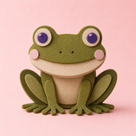

STORKA 01 · MONTAŻ / BEZ DŹWIĘKU
Hop, po zakupy
{kind=link}
Naklejka Link: „Pobierz ŻabHopa”. Skopiuj adres App Store.

ŻabHop PAKIET PREMIEROWYMAŁA APLIKACJA. WIELKA STRZAŁKA.
Gotowe storki, posty i słowa.
ŻabHop idzie na Twoje sociale.
Ty wybierasz, co i kiedy publikujesz. Ta strona niczego nie publikuje za Ciebie.
Nie udało się wczytać dodatkowych informacji o pakiecie. Materiały i pakiety ZIP są nadal dostępne przez poniższe linki.
PIĘĆ MAŁYCH OPOWIEŚCI
Puść po kolei albo wybierz jedną. Każda storka działa samodzielnie i ma wolne miejsce na prawdziwą naklejkę Link.
STORKA 01 · MONTAŻ / BEZ DŹWIĘKU
Naklejka Link: „Pobierz ŻabHopa”. Skopiuj adres App Store.
STORKA 02 · MONTAŻ / BEZ DŹWIĘKU
Naklejka Link: „Pobierz ŻabHopa”. Skopiuj adres App Store.
STORKA 03 · MONTAŻ / BEZ DŹWIĘKU
Godziny na zrzucie są historyczne. Dodaj naklejkę Link do aplikacji.
STORKA 04 · MONTAŻ / BEZ DŹWIĘKU
Naklejka Link: „Pobierz ŻabHopa”. Skopiuj adres App Store.
STORKA 05 · MONTAŻ / BEZ DŹWIĘKU
Naklejka Link: „Pobierz ŻabHopa”. Skopiuj adres App Store.
NA DŁUŻEJ NIŻ DOBĘ
Dwa osobne posty albo mała karuzela. Teksty na Instagram, Facebook i LinkedIn czekają niżej.
KOPIUJ. DOPISZ COŚ OD SIEBIE.
Gotowe podpisy do postów. Na Instagramie link w opisie nie jest klikalny — dodaj go do naklejki Link w relacji lub swojego profilu.
TU ZACZYNA SIĘ PRAWDZIWY HOP
Prowadzi do aplikacji w App Store, nie do tej galerii.
Jeśli kopiowanie jest niedostępne, przytrzymaj adres, zaznacz go i wybierz „Kopiuj”.
NA IPHONIE, BEZ KOMBINOWANIA
W planszy 1080 × 1920 px: lewy górny róg pola to x = 240, y = 1510, szerokość 600 px, wysokość 120 px. Środek pola wypada na około 82% wysokości.
MP4 i JPG nie zawierają klikalnego linku. Naklejkę dodajesz samodzielnie w aplikacji społecznościowej. Bez tej naklejki materiał jest tylko filmem lub obrazem.
{kind=link}
{kind=link}
{kind=link}
{kind=link}
{kind=link}
{kind=link}